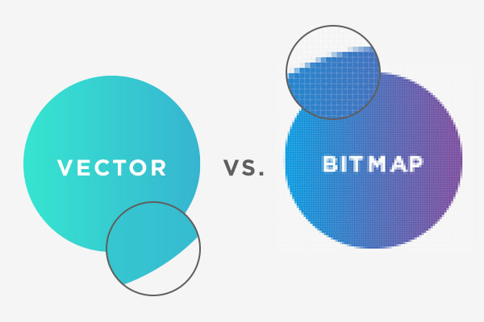

Compressie betekent dat je een bestand kleiner maakt. Hierdoor neemt het minder opslagruimte in beslag en kan het sneller via internet worden verstuurd. Compressie wordt bijvoorbeeld gebruikt bij foto's, video's, muziek en documenten.
Er zijn verschillende manieren om bestanden kleiner te maken. Twee belangrijke begrippen zijn verliesloze compressie en compressie met verlies.

Bij verliesloze compressie wordt een bestand kleiner gemaakt zonder dat er gegevens verloren gaan. Na het uitpakken kun je het oorspronkelijke bestand helemaal terugkrijgen. Dit wordt bijvoorbeeld gebruikt bij ZIP-bestanden.
Bij compressie met verlies worden sommige gegevens verwijderd om een bestand kleiner te maken. Meestal merk je daar weinig van, maar de oorspronkelijke kwaliteit kan minder worden. Dit wordt bijvoorbeeld gebruikt bij JPEG-afbeeldingen en bepaalde video- en muziekbestanden.
Een bitmapafbeelding bestaat uit heel veel kleine puntjes. Deze puntjes noemen we pixels. Elke pixel heeft een eigen kleur. Samen vormen de pixels een afbeelding.
Foto's die je met een telefoon maakt, zijn meestal bitmapafbeeldingen. Als je een bitmap sterk vergroot, kun je de afzonderlijke pixels zien. De afbeelding lijkt dan minder scherp.
Een foto met veel pixels kan veel details bevatten en daardoor een groot bestand zijn. Door de foto te comprimeren, kan het bestand kleiner worden. Bij compressie met verlies kan daarbij een deel van de beeldinformatie verdwijnen.
Een vectorafbeelding bestaat niet uit pixels, maar uit lijnen, punten, vormen en berekeningen. De computer gebruikt deze gegevens om de afbeelding te tekenen.
Een groot voordeel van vectorafbeeldingen is dat je ze groter of kleiner kunt maken zonder dat ze wazig worden. Daarom worden ze vaak gebruikt voor logo's, pictogrammen en tekeningen.
Een bedrijfslogo wordt vaak als vectorbestand opgeslagen. Hetzelfde logo kan dan klein op een visitekaartje staan of heel groot op een reclamebord, zonder dat de randen blokkerig worden.
| Eigenschap | Bitmap | Vector |
|---|---|---|
| Opbouw | Pixels | Lijnen en vormen |
| Voorbeelden | Foto's | Logo's en pictogrammen |
| Vergroten | Kan blokkerig worden | Blijft scherp |
| Bestandsformaten | JPG, PNG, BMP | SVG |
Compressie is handig omdat foto's, video's en andere bestanden veel opslagruimte kunnen innemen. Door bestanden kleiner te maken, passen er meer bestanden op een apparaat en kunnen ze sneller worden verstuurd.
Het is wel belangrijk om de juiste methode te kiezen. Bij een belangrijke afbeelding wil je misschien geen kwaliteit verliezen. Bij een grote verzameling foto's kan een kleinere bestandsgrootte juist handig zijn.
Hieronder kun je een YouTube-video over bitmap- en vectorafbeeldingen zien. De video kan helpen om het verschil tussen pixels en vectorvormen beter te begrijpen.
Ik heb deze video gekozen omdat hij op een eenvoudige manier uitlegt wat het verschil is tussen bitmap- en vectorafbeeldingen. Na het bekijken van de video begrijp ik beter dat bitmapafbeeldingen uit pixels bestaan en daardoor wazig kunnen worden als je ze vergroot. Ook heb ik geleerd dat vectorafbeeldingen uit lijnen en vormen bestaan, waardoor ze altijd scherp blijven. Daardoor weet ik nu beter wanneer je een bitmapafbeelding gebruikt, zoals bij foto's, en wanneer een vectorafbeelding handig is, zoals bij logo's